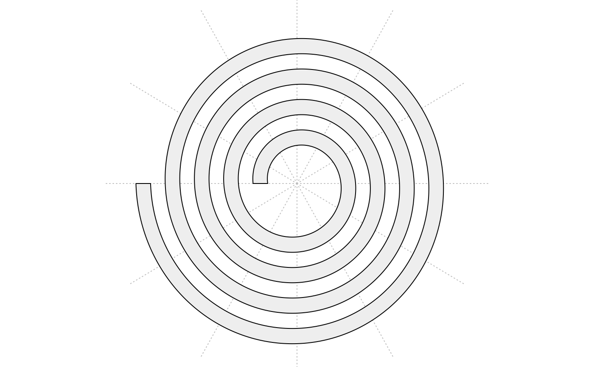
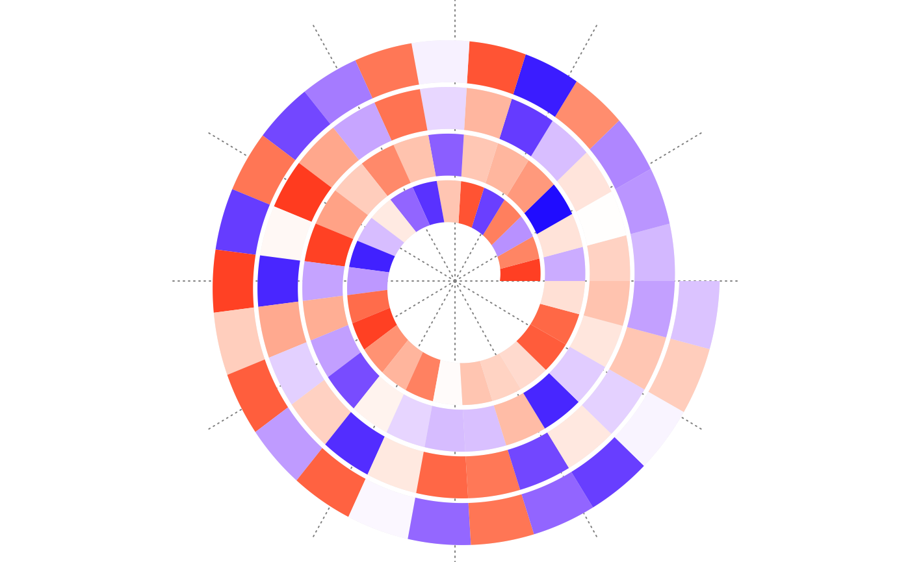
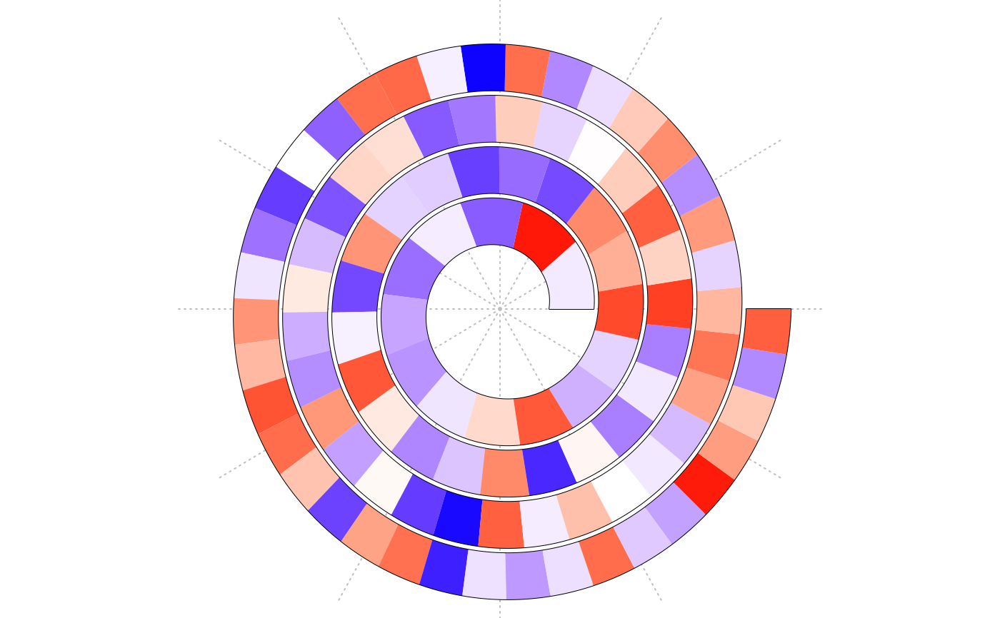

spiral_initialize.RdInitialize the spiral
spiral_initialize(xlim = c(0, 1), start = 360, end = 360*5, scale_by = c("angle", "curve_length"), flip = c("none", "vertical", "horizontal", "both"), reverse = FALSE, polar_lines = TRUE, polar_lines_by = 30, polar_lines_gp = gpar(col = "#404040", lty = 3), padding = unit(5, "mm"), newpage = TRUE, vp_param = list())
| xlim | Range on x-locations. |
|---|---|
| start | Start of the spiral, in degree. |
| end | End of the spiral, in degree. |
| scale_by | How scales on x-axis are equally interpolated? The values can be one of "angle" and "curve_length". If the value is "angle", equal angle difference corresponds to equal difference of data. In this case, in outer loops, the scales are longer than in the inner loops, although the difference on the data are the same. If the value is "curve_length", equal curve length difference corresponds to the equal difference of the data. |
| flip | How to flip the spiral? By default, the spiral starts from the origin of the coordinate and grows reverseclockwisely. The argument controls the growing direction of the spiral. |
| reverse | By default, the most inside of the spiral corresponds to the lower boundary of x-location. Setting the value to |
| polar_lines | Whether draw the polar guiding lines. |
| polar_lines_by | Increment of the polar lines. Measured in degree. |
| polar_lines_gp | Graphics parameters for the polar lines. |
| padding | Padding of the plotting region. The value can be a |
| newpage | Whether to apply |
| vp_param | A list of parameters sent to |
# the following example shows the difference of `scale_by` more clearly: make_plot = function(scale_by) { n = 100 require(circlize) col = circlize::colorRamp2(c(0, 0.5, 1), c("blue", "white", "red")) spiral_initialize(xlim = c(0, n), scale_by = scale_by) spiral_track(height = 0.9) x = runif(n) spiral_rect(1:n - 1, 0, 1:n, 1, gp = gpar(fill = col(x), col = NA)) } make_plot("angle")#>#> #> #> #> #> #> #> #> #> #> #> #> #>make_plot("curve_length")